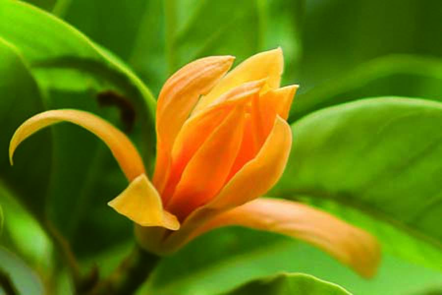

Bunga Jeumpa adalah bunga kebanggaan masyarakat Aceh. Di luar Aceh, bunga ini dikenal dengan sebutan Bunga Kantil. Dahulu Jeumpa tumbuh liar di Bumi Serambi Mekkah karena Jeumpa memang tumbuhan endemik yang tumbuh subur dengan sendirinya tanpa ditanam terlebih dahulu. Pohon-pohonnya yang tinggi dan besar mampu menyangga dahan dan ranting dengan bunga yang cukup banyak sehingga mengeluarkan keharuman yang khas di Aceh.
Ironinya, saat ini pertumbuhan Jeumpa semakin langka, semakin sulit ditemukan. Tak salah jika banyak generasi muda bertanya, “yang mana bunga Jeumpa itu?”; “seperti apa bunga Jeumpa itu?”
Faktanya, jeumpa lebih dari sekedar bunga yang indah karena keberadaannya telah mempengaruhi banyak hal dalam kebudayaan Aceh, mulai dari upacara tradisi hingga ukiran pada bangunan, jeumpa turut memberi nilai estetika.